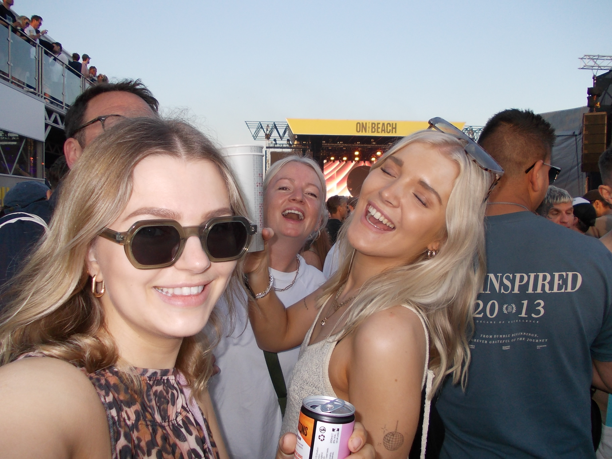
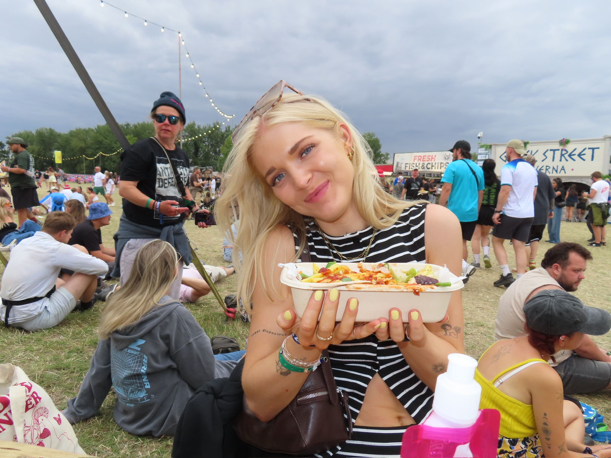
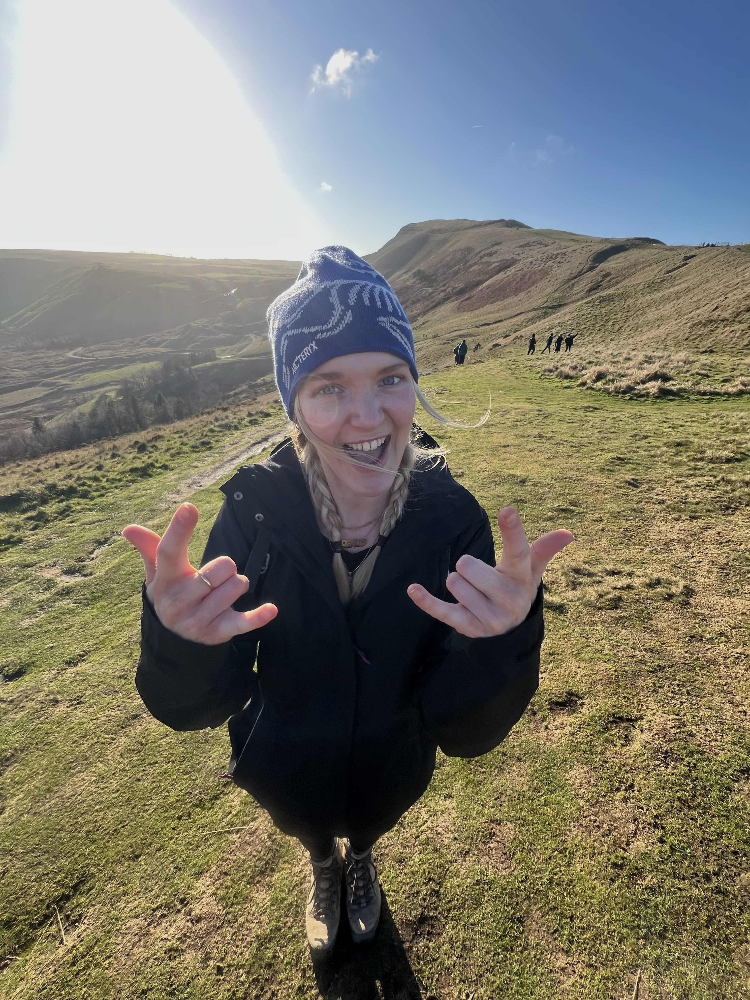
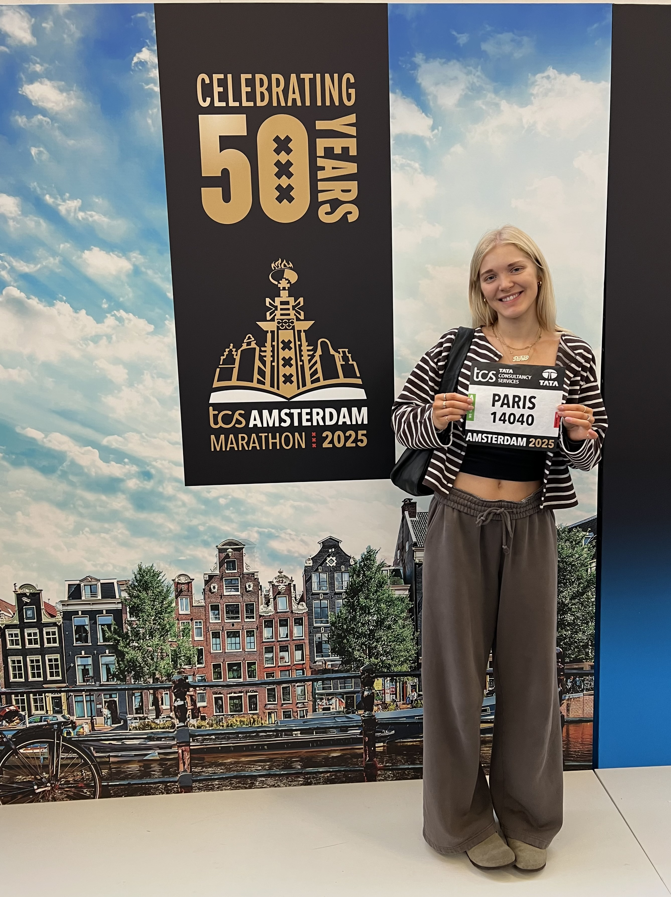

a bit about me





I am a recent First Class graduate in Textile Design with Creative Computing from Chelsea College of Arts, where I specialised in print design before expanding my practice into digital and immersive artwork.
My work is heavily influenced by my love for electronic music, festivals and live experiences. I enjoy exploring how I can combine print, creative coding and digital technologies to create visual experiences that feel interactive and engaging.
My Diploma in Creative Computing sparked my interest in generative design, creative technology and experimenting with digital processes.
Outside of design, I love being outdoors and staying active, whether that being marathon running, hiking, or cycling.